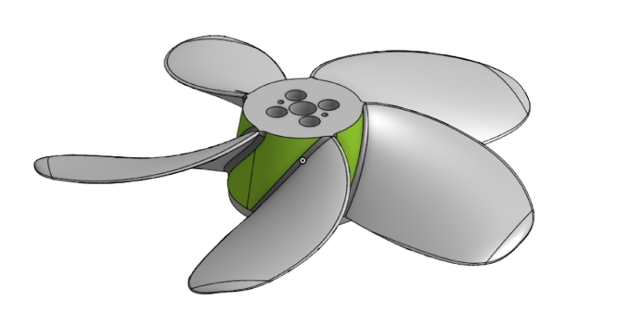

I wanted to build an electric outboard motor that operates in the 50V range, as existing 12V options didn’t meet my needs. Other electric outboards on the market were expensive, and I already had the parts to create my own.
I used the B-series propeller generator to create CAD files for a custom propeller, optimized for the speed and RPM I was targeting. I 3D-printed the propeller (strengthened with a cyanoacrylate coating) and connected it to a large brushless outrunner motor I had on hand. I was thrilled when I later saw RCTestFlight follow a nearly identical design path in his YouTube series!
To protect the motor, I kept the stock stainless bearings but coated the stator with marine-grade epoxy. I mounted the motor using an existing Minnkota system and designed a hydrodynamic fairing to surround the outrunner. After testing it on my 16-foot sailboat, I was pleased with its efficiency in the speed range I needed.
In the future, I’ll be adding more detailed documentation and images to illustrate each part of the process. Stay tuned for updates!